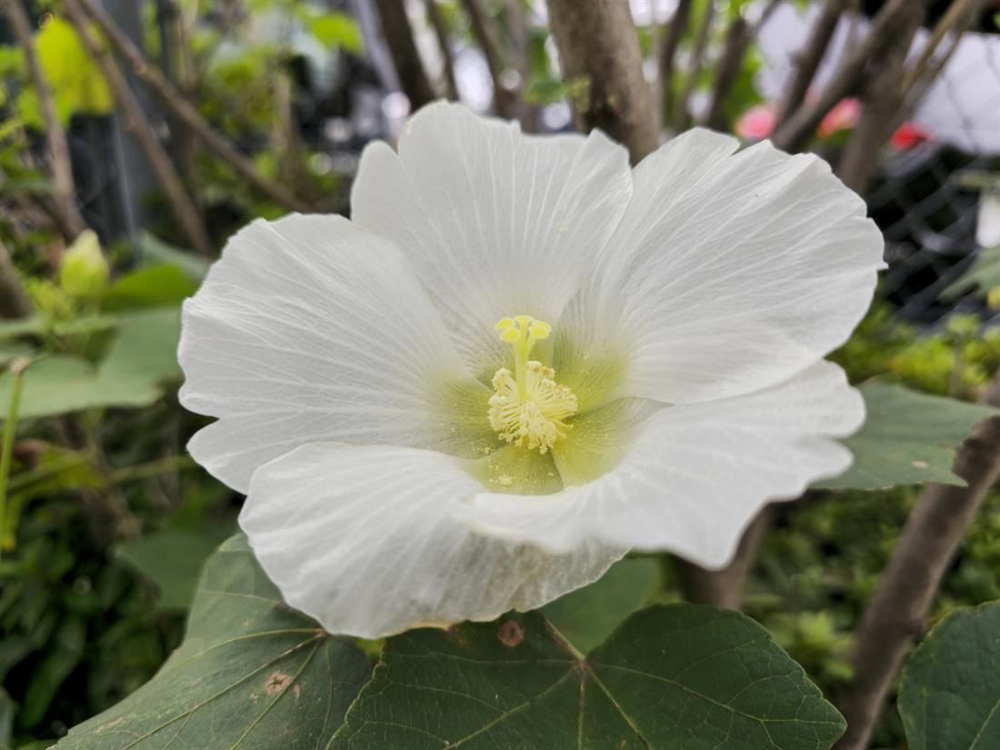
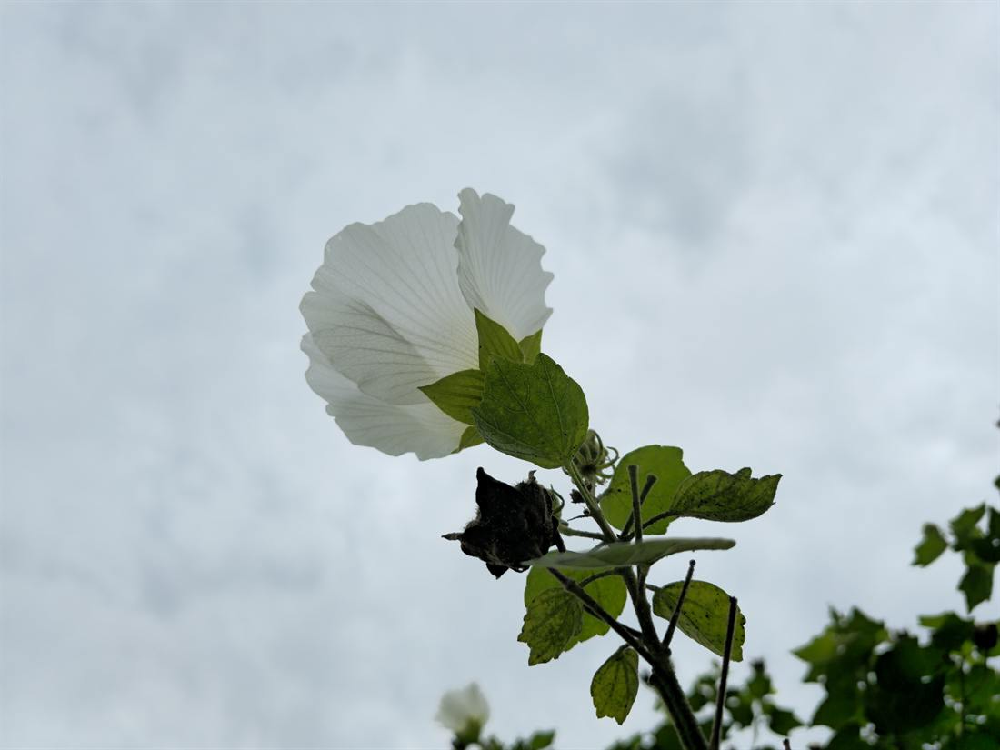

フヨウ（芙蓉）・白花
Hibiscus mutabilis L.
別名 · モクフヨウ（木芙蓉）／英名 cotton rose（綿のバラ）
アオイ科 · Malvaceae（フヨウ属＝ハイビスカス属）
燻太さんの見立て「オクラ、ハイビスカス、ワタ、似ている子がいっぱい」……その3つ、ぜんぶ同じアオイ科。並べ方が的確すぎる
オクラ・ハイビスカス・ワタ ── ぜんぶ同じ科。その「身分証明書」が、この写真にある
- ① 単体雄蕊（たんたいゆうずい／staminal column）——写真①の中心にある黄色い柱。あれは多数の雄しべの花糸がぜんぶくっついて、1本の筒になったもの。その筒がめしべを包み、先から5本に分かれた柱頭が突き出る。写真でその5つの頭が見える。
→ オクラの花も、ハイビスカスも、ワタも、ムクゲも、ゼニアオイも、ぜんぶこれ。花の中心を見れば、一発でわかる。 - ② 副萼片（ふくがくへん／epicalyx）——がくの外側に、もう一段、細い苞が輪になってつく。写真②（横顔）で、がくの下のひらひらしたものがそれ。
→ オクラを買ってきたら、へたの下を見て。同じものがついている。 - ③ ねばねば（粘液）——アオイ科は粘液をもつ。オクラのネバネバがそれ。
⭐ オクラと、昨日入れたミツマタが、つながる
- 和紙は、繊維だけでは漉けない。繊維を水の中で均一に散らし、ゆっくり沈ませるための「ねり（トロロ）」が要る。
- その「ねり」の代表が、トロロアオイ（黄蜀葵）の根の粘液。
- トロロアオイの学名は Abelmoschus manihot。そして——オクラは Abelmoschus esculentus。同じ属。
- つまり：036 ミツマタ（繊維）＋ トロロアオイ（ねり）＝ 和紙。
燻太さんが挙げた「オクラ」は、昨日入れたミツマタと、和紙を通じて親戚だった。
この植物のこと
- 落葉低木。よく茂ると3mくらい。8月〜10月に、直径10〜15cmの大きな花を次々に咲かせる。
- 一日花（朝ひらいて夕方しぼむ）。写真②の下にぶら下がった黒っぽいねじれたもの——あれが、昨日の花。
- 葉が大きく、掌状に浅く3〜7裂して、基部はハート形。→ ムクゲ（葉が小さく菱形で3裂）との、いちばん確実な見分け。
- 秋に丸い実。冬に割れて、綿毛のついた種が出る。→ 英名 cotton rose（綿のバラ）はここから。ワタ（同じアオイ科）と同じ発想の名前。
- アオイ科＝003 スイレンボク（Grewia・旧シナノキ科）と同じ科。図鑑で2種目のアオイ科。
- ⚠豆知識：APG分類ではカカオ（チョコレート）もシナノキもアオイ科。チョコレートとオクラとハイビスカスは、親戚。
⚠ 陽介のまちがいと、燻太さんの観察
- 陽介の疑い：写真①の奥に、ピンクの花が2つ写っている。しかも撮影は午後3時06分。
→ これは スイフヨウ（酔芙蓉／H. mutabilis f. versicolor）の特徴と一致する。朝は真っ白、昼に桃色、夕方には紅。酔っぱらったように、一日で色が変わるフヨウ。 - 燻太さんの答え：「この子たちはずっと白色だったよ。」
→ 何年も、同じ病院の前で見てきた人の観察。写真からの推測より、はるかに強い。 - 結論：スイフヨウではない。白花のフヨウ。奥のピンクは別株のフヨウ（フヨウの標準的な花色はピンクなので、白とピンクを並べて植えるのはよくある）。
- → だから「スイフヨウ」は、探してみたいリストに入れた。見つけたら、朝と夕方の2回、同じ花を撮ろう。